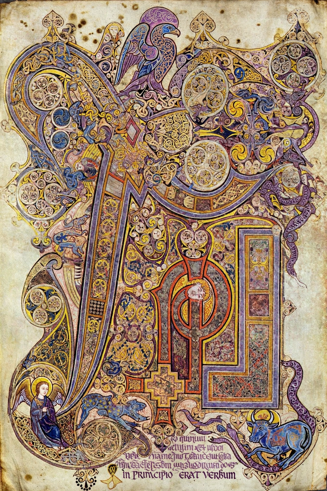

| Book of Kells | |
|---|---|
| Also known as | Book of Columba |
| Date | c. 800 AD |
| Origin | Iona / Kells, Columban monasteries |
| Contents | The four Gospels in Latin (Vulgate), with prefatory matter |
| Material | Vellum (calfskin), 340 surviving folios |
| Location | Old Library, Trinity College Dublin (MS 58) |
The Book of Kells (Latin: Codex Cenannensis; Irish: Leabhar Cheanannais), sometimes known as the Book of Columba, is an illuminated manuscript Gospel book in Latin, containing the four Gospels of the New Testament together with various prefatory texts and tables. It was created in a Columban monastery in either Ireland, Scotland, or England, and may have had contributions from various Columban institutions; it is generally dated to c. 800 AD.
The manuscript takes its name from the Abbey of Kells, County Meath, Ireland, which was its home for centuries after monks fleeing Viking raids on Iona brought it (or it was made) there. The Annals of Ulster record its theft in 1007 — "the most precious object of the western world" — and its recovery months later, minus its jewelled shrine cover. In 1654, during the Cromwellian period, it was sent to Dublin for safekeeping, and in 1661 Henry Jones presented it to Trinity College, where it remains.
The text is accompanied by extravagant decoration: full-page miniatures of Christ, the Virgin and Child (the earliest surviving in a Western manuscript), evangelist portraits and symbols, carpet pages, and the riotously ornamented Chi Rho monogram page opening Matthew's nativity account. Nearly every page carries decorated initials and interlace inhabited by humans, animals, and mythical beasts, executed in pigments including red and yellow ochre, lapis-derived blues, and orpiment. The work of at least three principal scribes/artists has been identified; the manuscript appears unfinished in places. Today it is displayed at the Old Library of Trinity College as the centrepiece of a permanent exhibition, alongside the Long Room, and is regarded as Ireland's national treasure.